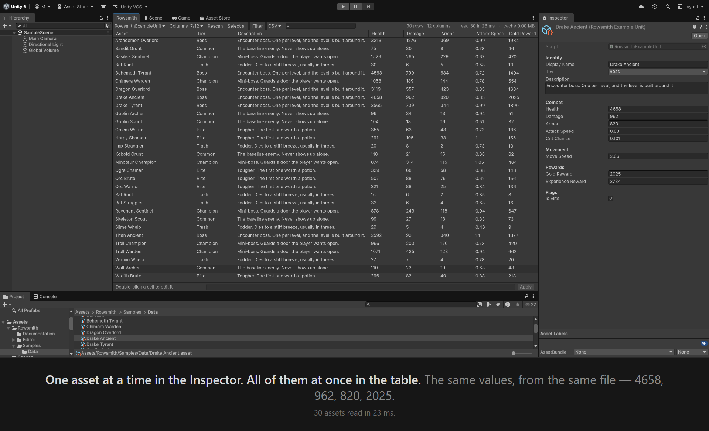
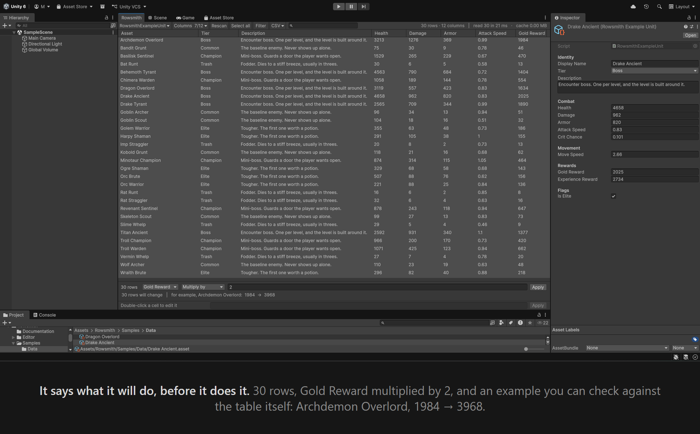
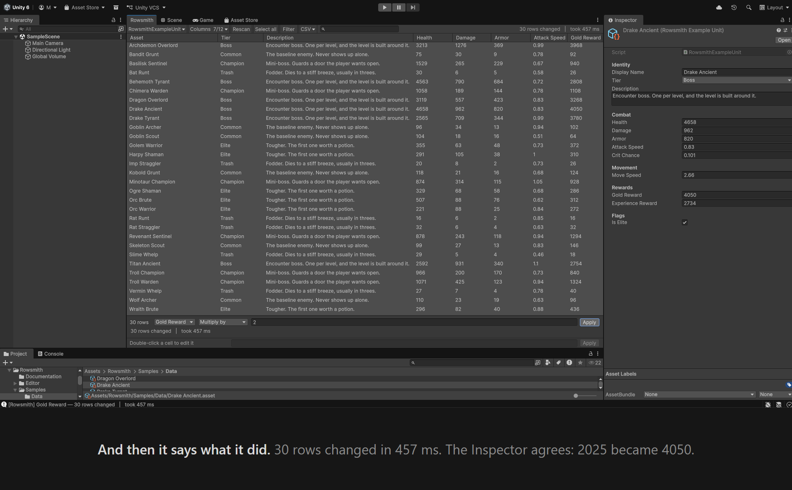
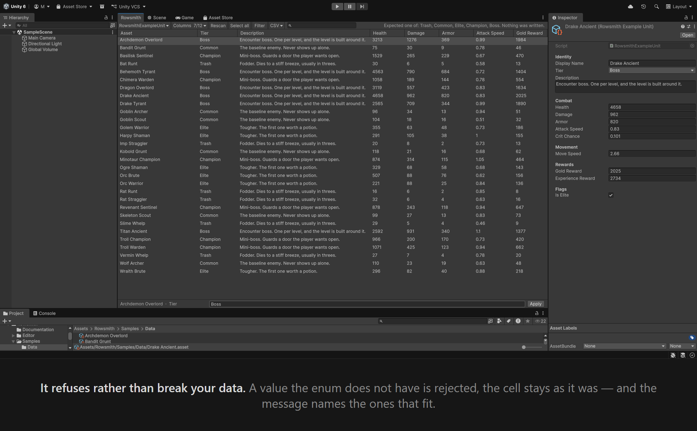
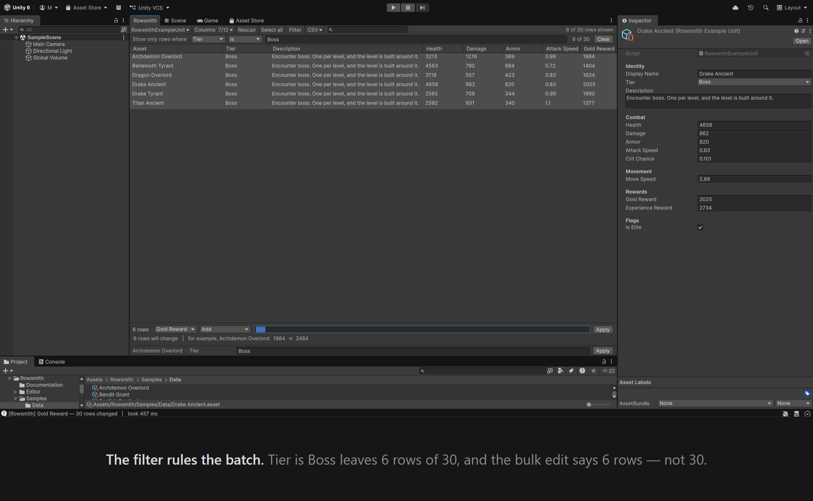
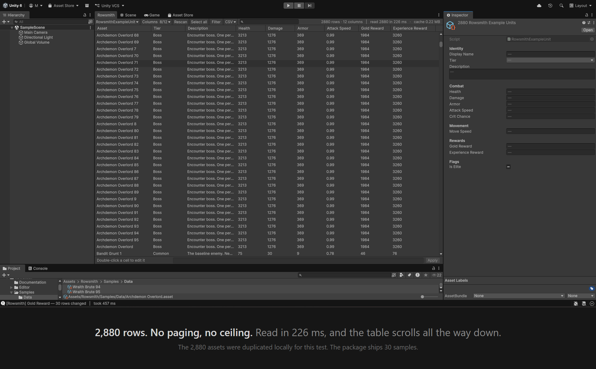

Rowsmith
Change everything. Break nothing.
Edit hundreds of ScriptableObjects as rows in one table, inside the Unity Editor. Export to CSV, edit in Excel or Google Sheets, bring it back — and approve every change before a single asset is written.
What it does






Compatibility
-
Unity 2022.3.62 through Unity 6.0 LTS. Both ends were tested by importing this exact
package into an empty project and using it:
2022.3.62f3and6000.0.66. - Unity 6.3 and 6.5 are not supported in this version. Unity is replacing an editor API this tool reads values with, and on 6.5 that replacement is already enforced, so the tool does not compile there. Support for them is planned, and it needs a build of its own rather than a change to this one.
- No render pipeline dependency. Tested on Windows 11.
What it touches, and what it does not
- It works offline. No network access, no telemetry, no account, no activation.
- It reads
.assetfiles underAssets/. It does not readPackages/. - It exports only to the file you pick in the save dialog, and imports only the file you pick.
- The tool itself is Editor-only and adds nothing to your build.
Known limits in this version
This list is here on purpose. A tool that hides what it cannot do costs you the afternoon you spend finding out.
- An import updates assets that already exist. It never creates new ones.
- Sub-assets are not listed. A file holding several objects shows only its main one.
- ScriptableObjects that live under
Packages/are not listed. - Recompiling a script can clear Unity's undo stack, and your batch or import would go with it.
- An undo happens in the editor's memory. The files on disk only change when you save — this is how Unity behaves everywhere, and Rowsmith says so in the status bar when it matters.
The full list ships inside the package, in the documentation.
Support
Something not working, or a question about what it can do? Support →